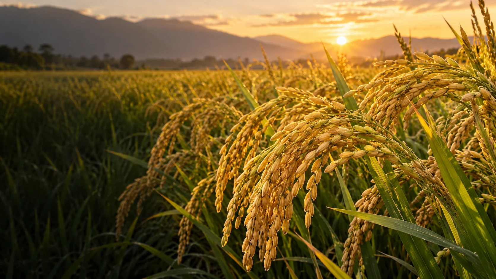
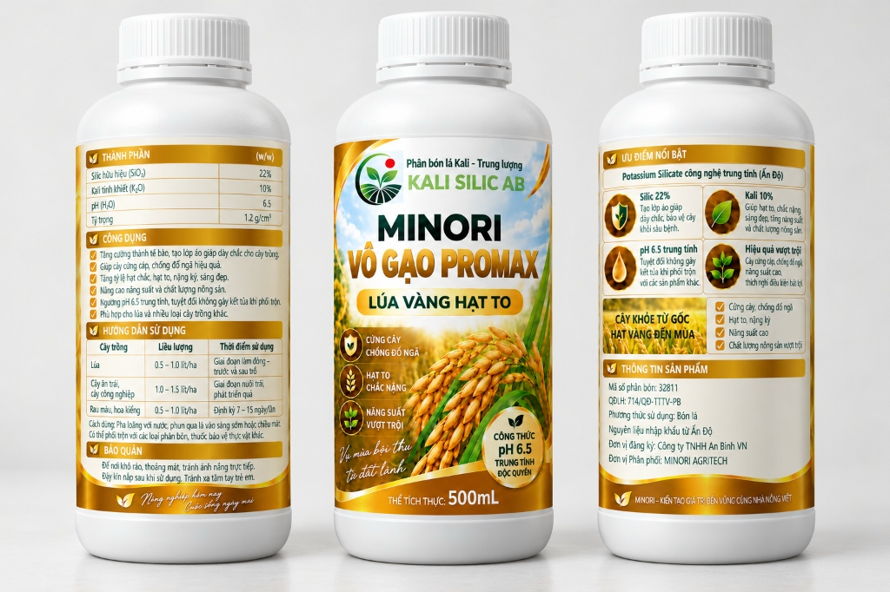

MINORI Vô Gạo Pro Max
Cứng cây, vững bông, chắc hạt
Silic 22% kết hợp kali 10%: chăm thân lá từ lúc làm đòng, tạo nền cho bông lúa chắc khỏe đến cuối vụ. Bổ sung silic và kali qua lá giúp thân cây đứng vững để đón nhận ánh sáng, đồng thời hỗ trợ vận chuyển dinh dưỡng nuôi hạt lúa no đầy.

MINORI Vô Gạo Pro Max
🔍 Phóng toHình ảnh đầy đủ MINORI Vô Gạo Pro Max
Ba góc nhìn chai 500 ml: thành phần & công dụng, mặt chính và hướng dẫn sử dụng chi tiết.
Cuối vụ, cây lúa cần điều gì?
Khi cây lúa chuyển sang làm đòng, trổ và nuôi hạt, sức bền của thân, khả năng hoạt động của lá đòng và quá trình vận chuyển chất đồng hóa đều đáng được quan tâm.
Một ruộng lúa có thân đứng vững sẽ thuận lợi hơn trong việc duy trì tán lá nhận ánh sáng quang hợp, hạn chế đổ ngã trước mưa gió và dồn sức hoàn thiện hạt lúa no chắc, sáng hạt.
Chỉ tiêu thành phần định hướng
Cây lúa tích lũy silic trong các mô thân và lá, tạo khung tế bào dày dặn, hỗ trợ thân đứng thẳng và tăng sức chống chịu với điều kiện bất lợi.
Tham gia điều tiết nước, hoạt hóa enzyme và thúc đẩy quá trình vận chuyển sản phẩm quang hợp từ lá về nuôi hạt, hỗ trợ hạt vào gạo đều và chắc.
Ngưỡng pH trung tính, thuận tiện cho việc pha loãng phun qua lá trong các cữ chăm sóc đòng và nuôi hạt.
Dung dịch đồng nhất, ổn định theo tiêu chuẩn chất lượng.
Cứng cây vững thân – Nuôi hạt chắc mẩy
“Bắt đầu mùa vụ bằng một bộ rễ khỏe. Kết thúc bằng bông lúa vàng và những hạt lúa no tròn, chắc mẩy.”
Hướng dẫn sử dụng MINORI Vô Gạo Pro Max
Hướng dẫn sử dụng sản phẩm cho cây lúa:
Liều lượng cho lúa
Sử dụng 0,5–1,0 lít/ha. Liều lượng được tính theo diện tích; bà con pha với lượng nước phù hợp theo thực tế thiết bị và tập quán canh tác địa phương.
Thời điểm sử dụng
Sử dụng ở giai đoạn làm đòng – trước và sau trổ. Hãy căn theo giai đoạn phát triển thực tế của giống lúa trên ruộng thay vì áp một mốc ngày sau sạ cố định.
Phương pháp & thời điểm phun
Pha loãng với nước, phun đều qua lá vào lúc sáng sớm hoặc chiều mát khi khí khổng mở tối ưu, tránh ánh nắng gay gắt để dưỡng chất hấp thu trọn vẹn.
Thử tương hợp khi phối trộn
Ngưỡng pH 6,5 trung tính thuận tiện khi pha loãng, nhưng không bảo đảm mọi hỗn hợp đều ổn định. Cần kiểm tra nhãn từng sản phẩm và thử tương hợp lượng nhỏ trước khi phối trộn đại trà.
Câu hỏi thường gặp về MINORI Vô Gạo Pro Max
Những thắc mắc phổ biến của bà con nông dân về công thức Silic – Kali và cách chăm lúa cuối vụ.
1. Vô Gạo Pro Max có những thành phần chính nào?
Thành phần chính: Silic hữu hiệu (SiO₂) 22% và Kali tinh khiết (K₂O) 10% (tính theo w/w); độ pH (H₂O) 6,5 và tỷ trọng 1,2 g/cm³.
2. Sản phẩm phù hợp lúc nào trên ruộng lúa?
Đề xuất dùng ở giai đoạn làm đòng – trước và sau trổ. Thời điểm cụ thể cần căn theo giống lúa và nhịp sinh trưởng thực tế của ruộng thay vì một mốc ngày cố định.
3. Silic và kali hỗ trợ gì cho cây lúa?
Silic liên quan đến cấu trúc thân lá và khả năng đứng vững; kali tham gia vận chuyển chất đồng hóa và quá trình nuôi hạt. Nghiên cứu trên lúa đã khảo sát hai hướng tác động này nhằm làm rõ cơ sở nông học, không phải thử nghiệm riêng trên sản phẩm Minori.
4. Dùng bao nhiêu cho một hecta?
Đề xuất liều lượng 0,5–1,0 lít/ha cho lúa, pha loãng với nước để phun qua lá vào sáng sớm hoặc chiều mát. Bà con tham khảo với cửa hàng bán sản phẩm để tư vấn trước khi sử dụng.